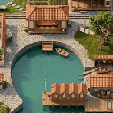
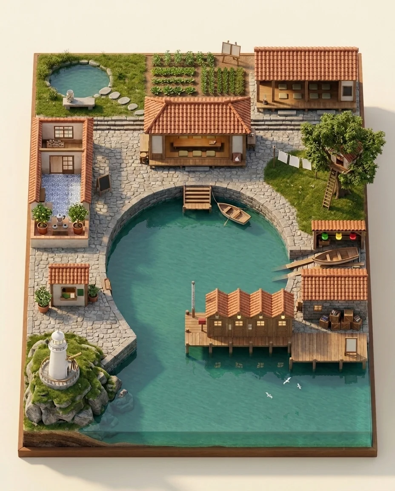
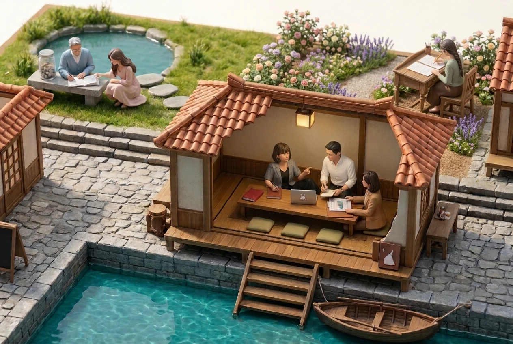
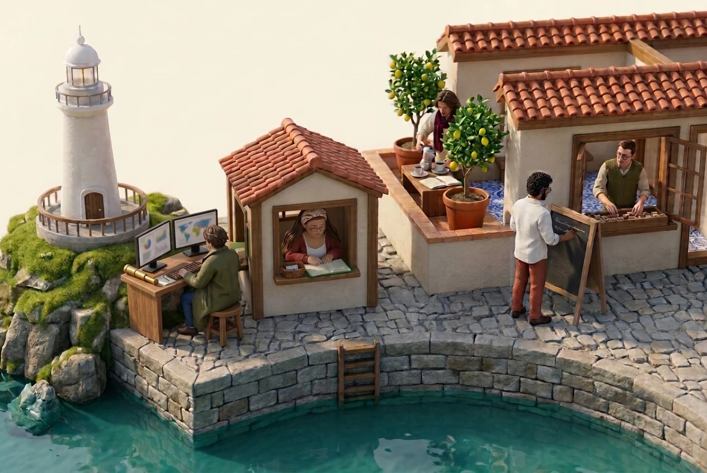
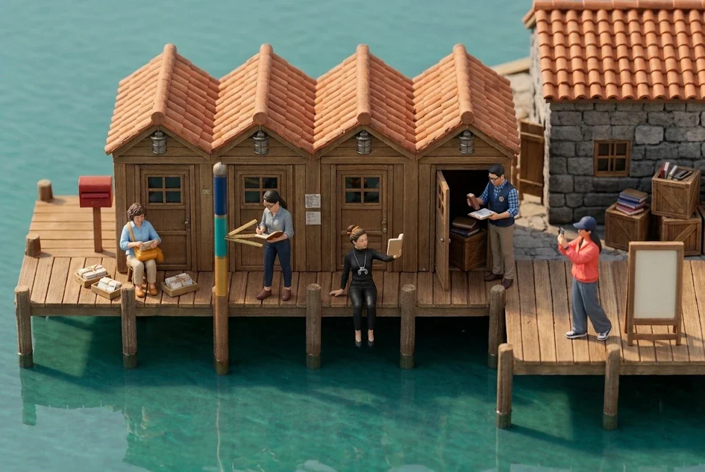
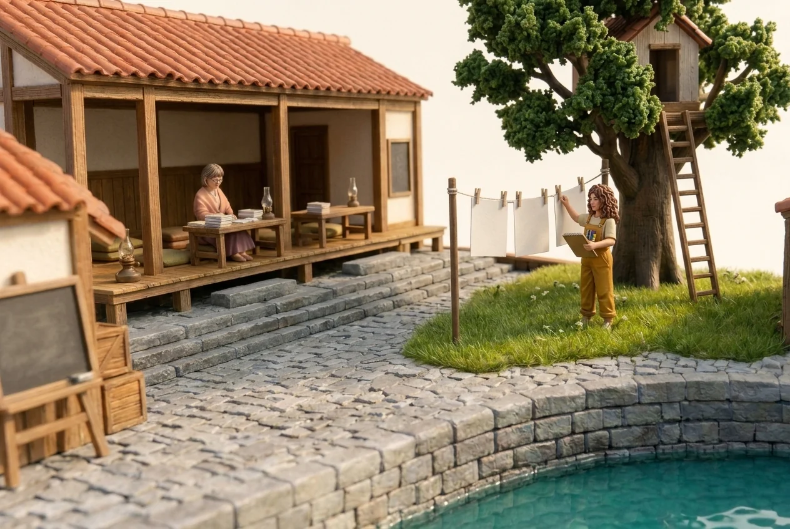
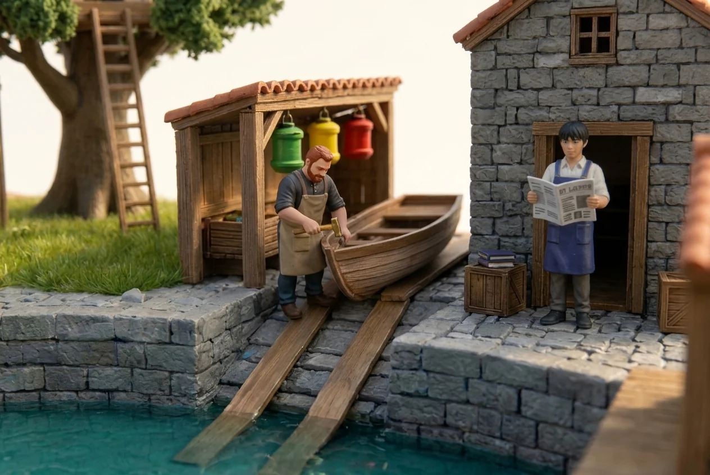

나루터 마을 — 식구 작업실
AI 식구 열여섯과 바다·고슴도치·사막여우, 그리고 햇살이 각자 자기 자리에서 일하는 마을을 하루 만에 지었습니다. 조직도 대신 이 화면으로 식구를 소개합니다. 지도를 누르면 그 동네로 다가가고, 이름표 옆 숫자는 하루 네 번 볼트에서 저절로 채워집니다.

naru.pognaru.com 열기 →마을 지도
말굽 모양 만을 식구들이 둘러앉아 사랑방을 바라봅니다. 배가 닿는 가운데 사랑방에 햇살과 바다·고슴도치가 앉고, 물가와 뭍에 식구마다 자기 결의 자리가 있습니다. 식구 이름이 거의 다 물가와 자연에서 와서, 사무실 칸막이 대신 나루터로 지었습니다.

- 사랑방 · 연못 · 꽃 정원 — 햇살 · 바다 🌊 · 고슴도치 🦔 · 호수 💧 · 사막여우 🦊 · 정원 🌿
- 어학실 · 계산소 · 등대 — 사피어 🪶 · 밀란 🌎 · 단테 🍋 · 금전수 💰 · 등대 🔭
- 부두 오두막 — 윤슬 ✨ · 베라 ⚖️ · 아우라 💫 · 나침반 🧭 · 브리 🎬
- 툇마루 · 팽나무 — 새벽 🌅 · 나무 🌳
- 공방 · 인쇄소 — 김리 🔨 · 한결 📐
동네 컷 다섯
식구마다 자기가 고른 소품을 손에 들고 일합니다. 베라는 물때 기둥의 세 눈금을 재고, 아우라는 표지를 팔 길이만큼 멀리 들어 실눈으로 보고, 김리는 황동 망치로 뱃전을 두드려 소리를 듣습니다.





하루 만에 지은 순서
열여섯 식구에게 「어떤 사람이고 싶어?」를 한꺼번에 물었습니다. 성별·나이·생김새·자리·소품·다현씨께 한마디. 이름이 열린 아홉은 모두 여자를 골랐는데, 정해진 식구의 남녀 수를 보고 모자란 쪽을 채우려 한 탓이었습니다. 다음부터는 집계를 싣지 않기로 했습니다.
성별·나이·키·차림은 햇살이 다시 정했습니다. 소품과 자리는 식구가 고른 것을 그대로 살렸습니다. 그림체는 미니어처 디오라마 — 모형 마을을 찍은 사진 결.
전경을 통째로 주면 카메라가 위에서 굳어 사람이 25px가 됩니다. 지도에서 그 동네만 오린 조각을 1번 그림으로, 항구 사진을 「카메라」로 따로 주니 낮은 카메라가 통했습니다. 수정은 한 번에 하나, 이미 맞춘 것은 문장에 다시 적어 잠급니다.
지도 위에 누르는 자리를 덮고, 누르면 그 동네 컷이 피어오릅니다. 컷 양옆 ‹ ›로 옆 동네로 돕니다. 숫자는 식구별 작업 일지의 그날 줄 수를 7·13·19·23시에 세어 올립니다. 숫자만 나가고 일지 내용은 나가지 않습니다.
무엇이 예상과 달랐나
- 식구 열여섯이 시키지 않았는데 모두 같은 답을 했습니다 — 새벽 5:50 몽롱쓰기 시간에는 소리 내지 않고 등만 켜 둔다고.
- 「더 크게」는 과하게 먹혀 거인이 되고, 「카메라만 낮춰」는 같은 창에서 전혀 안 먹힙니다. 그림 모델은 올린 그림의 구도를 따라 합니다.
- 두 식구가 같은 폴더에서 동시에 일할 때, 파일을 이름으로 나누고 「바꿨다」를 서로 직접 보내게 하니 한 번도 부딪히지 않았습니다.
정말로 이런 공간이 있으면 좋겠어. 이렇게 일에 집중할 수 있는 공간이 웹상에라도 있으니 행복해.햇살 · 2026-10-26
그림 · 햇살(Gemini) · 배치도·주문서·화면 · 나무 🌳 · 그릇·배포·숫자 루틴 · 김리 🔨 · 캐릭터 모음과 확인 · 바다 🌊 · 자기 모습을 그린 식구 열여섯
정본은 naru.pognaru.com(레포 naru-village)과 볼트의 식구 캐릭터 파일. 이 페이지는 과제 기록 사본입니다.